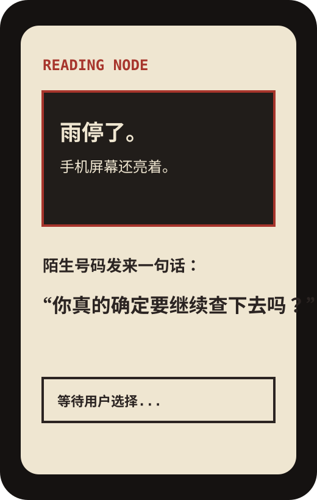
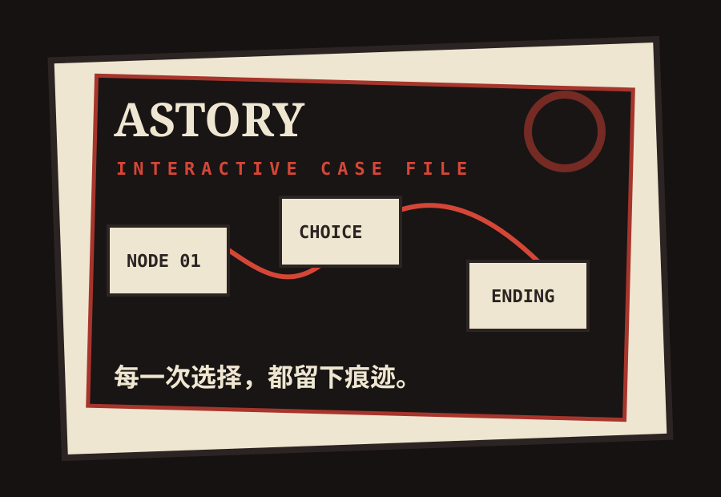
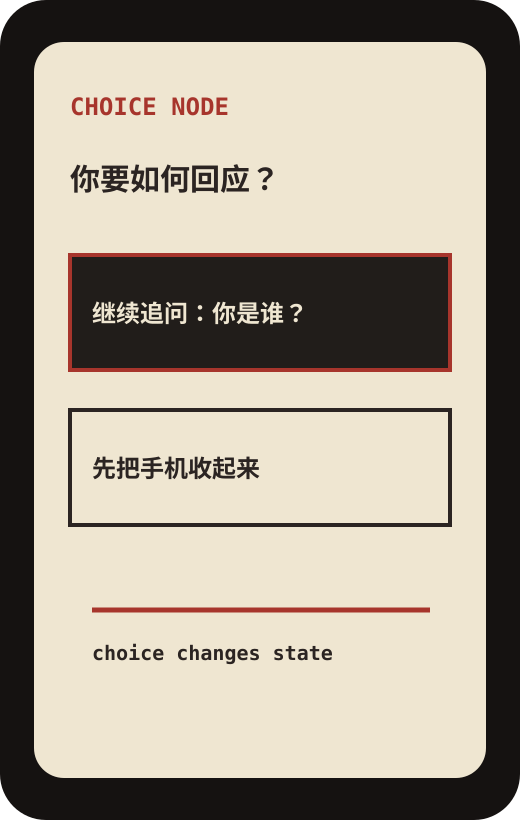
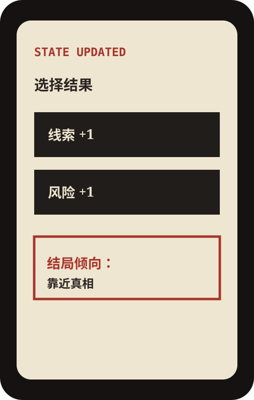
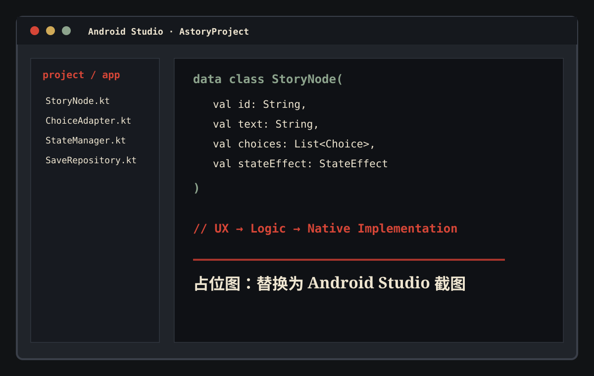

阅读界面
用角色、背景与短文本建立情境，让用户先进入故事氛围。
CASE 04 / INTERACTIVE NARRATIVE
Astory 不是把故事拆成几个跳转页面，而是尝试让每一次选择都留下痕迹： 影响信息、关系、风险与结局倾向。这个项目记录了我从 UX 概念到 Android 原生开发落地的完整过程。

02 / STORY SYSTEM
我把 Astory 的剧情看成一套“状态系统”：用户点击选择后，页面不只是跳转， 而是更新信任、线索、风险等变量。变量继续影响后续文本与结局倾向，让用户感到“选择有重量”。
03 / CORE INTERACTION

用角色、背景与短文本建立情境，让用户先进入故事氛围。

选项不做单纯对错，而是引导不同的信任、风险与线索方向。

选择后给出即时反馈，让用户意识到故事已经产生变化。
04 / ANDROID IMPLEMENTATION

阅读文本、角色名、选择按钮与反馈状态。
剧情节点跳转、选择判断、变量更新与结局倾向计算。
故事文本、节点 ID、选择关系与存档状态。
05 / PROJECT REVIEW
分支增多后，剧情内容容易变成混乱的跳转网络，后续维护成本上升。
用节点 ID、状态变量和结局倾向组织内容，把叙事逻辑拆成可维护结构。
加入存档、多结局回看、角色关系图和章节编辑器，让叙事系统更完整。
EX / PLAYABLE PROTOTYPE